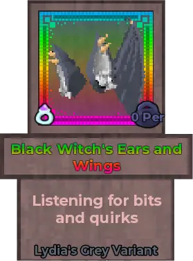
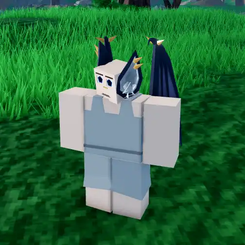
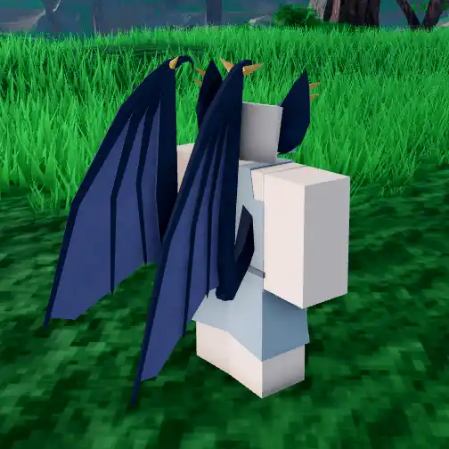
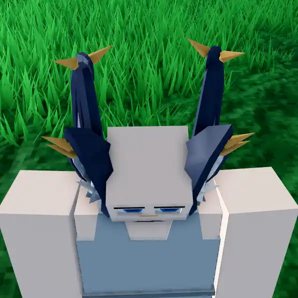
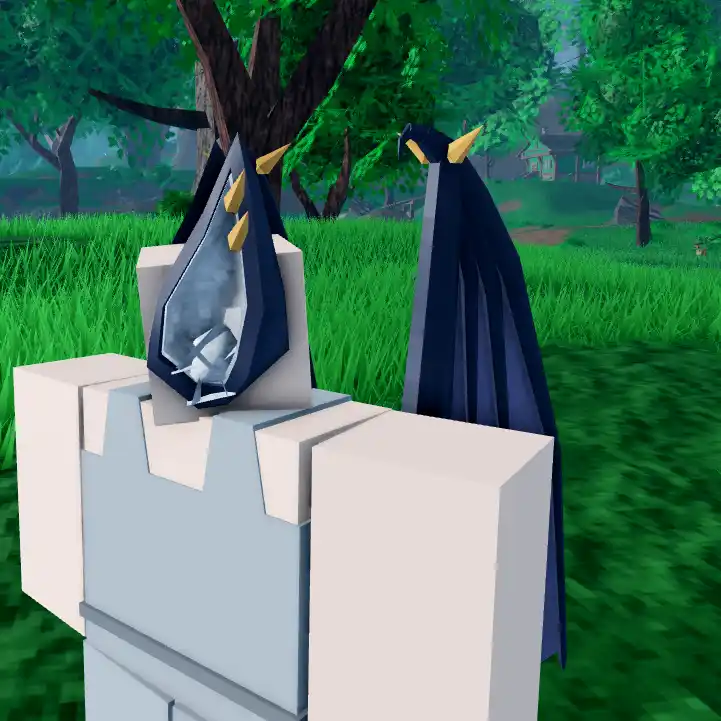
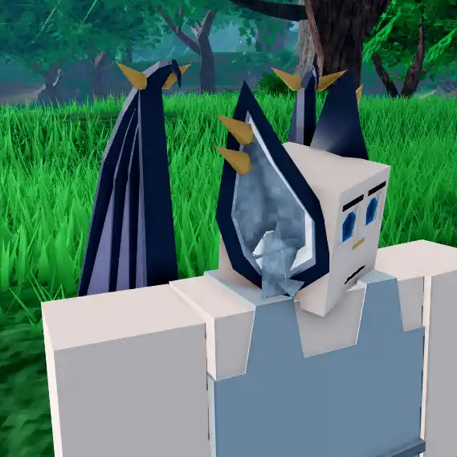

Black Witch's Ears and Wings

Info
Slot: Accessory
Recolorable?: Yes
Unique Colors: Lydia's Black
Particle Effects: None
Sound Effects: None
Owner: squidbluie / squib
Appearance & Effects
In-game description: Listening for bits and quirks
The Black Witch's Ears and Wings appear to be a pair of oversized bat ears with a set of wings. The ears are adorned with golden ear cuffs and white fluff. The wings resemble those of a bat. The Black Witch's Ears also come with a nose ring that appears on the player's face. The outer fur of the Black Witch's Ears and Wings are recolorable and come with their own unique color, Lydia's Grey.
Inspiration
The Black Witch's Ears and Wings were inspried by the design of the YouTuber Zullie the Witch. She first debuted the character that the ears were based on in this YouTube video. but the design for the relic specifically referenced TomatoLover16's renders of the character. The owner, squidbluie, is a big fan of the game design content that Zullie the Witch creates, and wanted the Black Witch's Ears as a tribute. They were originally called the Black Witch's Ears and only included the ears, but the wings were added later.

The Black Witch's Ears and Wings from the front

From the back
Image Gallery

Overhead view

Side view

Other side view

The Black Witch's Ears, which was the old relic before the wings were added

Another view of the Black Witch's Ears